A better relationship with your phone, and with yourself.
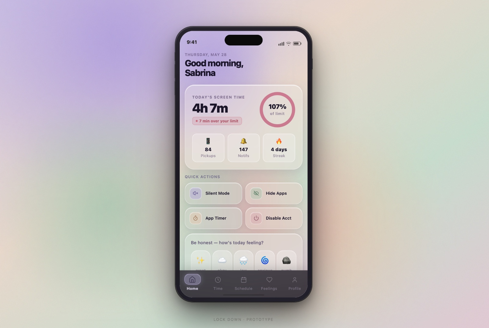
I wanted to understand how the use of technology directly shapes our behavior and mental health, not as a vague worry, but as something I could measure and design against. So I proposed an independent study to Dr. Kelter and began Lock Down: a mobile concept and a piece of behavioral research, built together.
The premise was simple and a little ironic, an app to get you off the apps. The real question underneath it was harder: what actually moves someone to change a habit they already know is hurting them?
Lock Down started as evidence, not screens. The first three weeks were entirely research: academic literature, a cross-country survey, and behavioral-science journaling. Design only began once the problem was defined.
Reviewed CDC and NCBI literature on how platforms affect wellbeing, and how governments evaluate their impact. Social media read as a mixed bag: harm and support both real.
Surveyed 18–24 year-olds across six countries. Preemptive-bias questions first, then personal info, then open-ended reflection, to catch what people assume before the data lands.
Cross-referenced consumer-behavior research with survey data and pre- vs. post-quarantine usage to isolate the psychological and design levers, and name the real problem.
From collective research and individual wireframes, the team narrowed the feature set and drafted the formal independent-study proposal.
Finished a low-fidelity mockup and used it to write the script for our user-testing interviews.
Pressure-tested whether the app should keep its trajectory. Sprinted many designs and iterations of the main pages.
Continued main-page iterations into two sections: Mental Health and Behavioral Change. Mahjustice tuned the color palette to keep the flow uniform.
Reviewed the revised mockup against semester time limits, projected what a longer runway would allow, and drafted the proposal as our closing artifact.
"How do you hold someone accountable?"
Drawing on research from Hypocrisy and the Usage of Condoms to Moral Credentials & Prejudice, people will self-transcend to reaffirm their self-image. If you let users license their own screen-time in a semi-public way, then confront them with behavior-relevant data, you can shift attitude through the gap between what they said and what they do.
That gap is the engine. The survey was built to measure intrinsic perspective first: before any statistics were revealed, users predicted their own usage and their peers' usage. The distance between the guess and the truth is where the hypocritical licensing effect does its work.
Most users could estimate the time they spend, what they spend it on, and the average for their peers. Ignorance was never the problem.
Users tie their mental health to social-media use and accept it. System-1 thinking makes the phone hard to resist without self-transcendent motivation.
Surfacing a person's own stated limits against their real behavior creates the dissonance that drives change. That is the mechanism Lock Down designs around.
Before any solution, the survey put numbers to the feeling. Two questions mattered most: how people rated their mental health, and how much they trusted their own willpower against the phone.
"How's your mental health right now?"
Bimodal, and skewed low. The biggest cluster sat at 3 out of 10, with a second bump at 7. Most students rated their mental health middling-to-poor, and tied it to their phones.
"What's your self-control like with temptation?"
87% rated themselves 3 or below. Almost no one trusts their own willpower against the phone. That is the System-1 gap Lock Down is built to carry, not scold.
People spend too much time on social media, and it is affecting their day to day lives. The tic of "checking the phone" compounds, and screen time grows exponentially from it.
If willpower fails under System-1 thinking, the interface has to carry the load. Eight features turn the research into friction in the right places, and rewards in the others.
Allot specific windows for social media instead of an open-ended feed.
Set a hard limit on the apps that pull you in the most.
Silence the phone on a schedule so notifications stop initiating the loop.
Cap how many apps can be open at once to break compulsive switching.
One toggle hides social apps off the home screen, raising the cost of a tap.
Pause a social account without the dread of permanent deletion.
Re-disable accounts automatically so you never have to re-open Instagram to do it.
Generate personal stats on improvements, slips, and benchmarks, the licensing data made motivating.
Four rounds, each driven by feedback from roommates, classmates, teachers, and the team. The throughline: condense, clarify, and unify a design three people could build together.
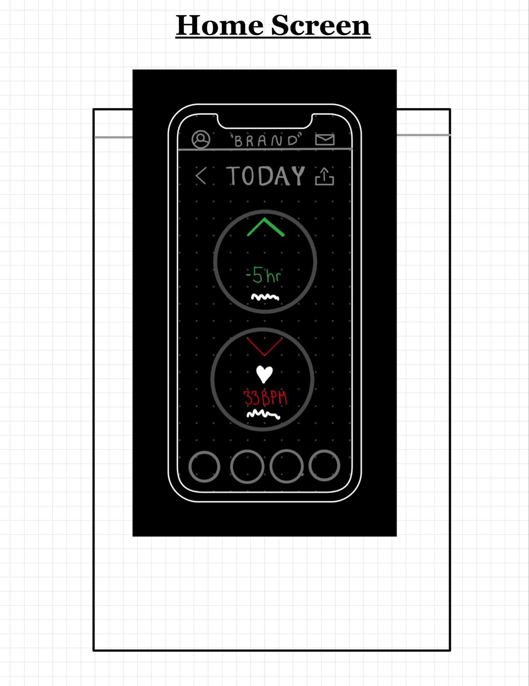
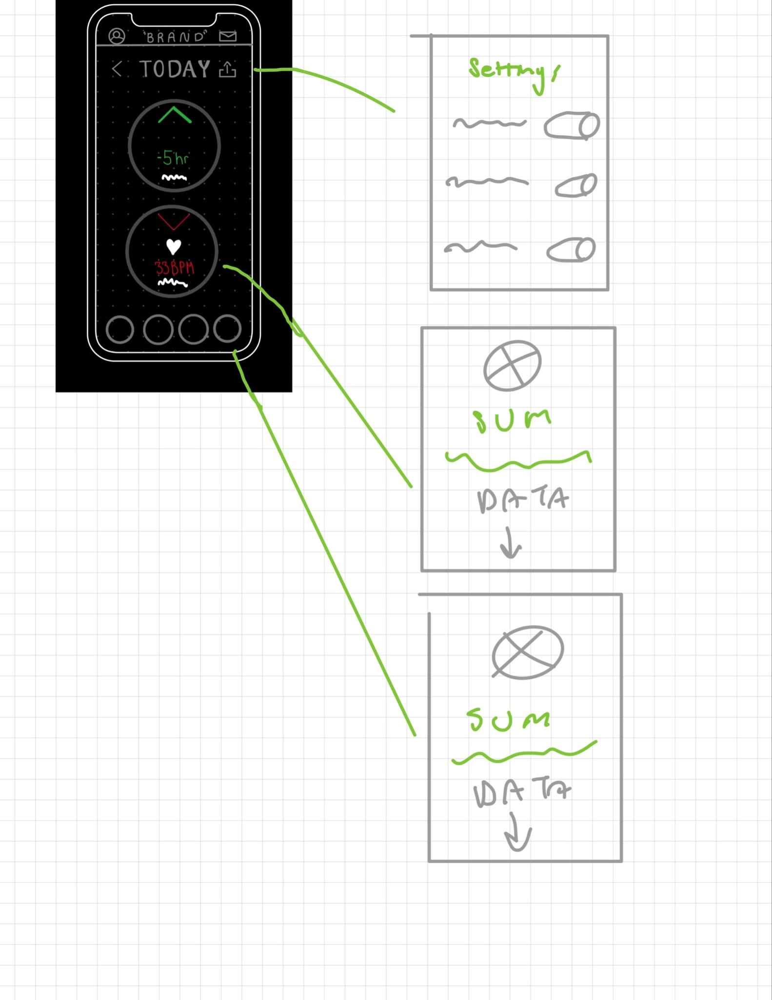
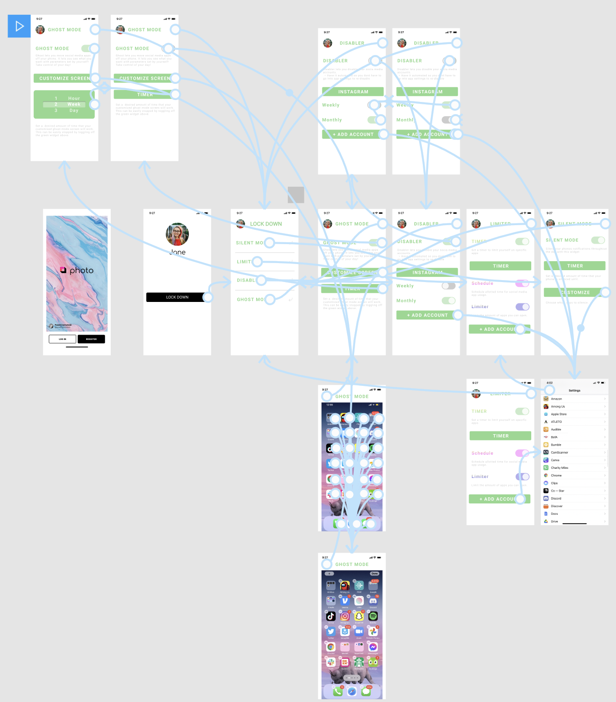
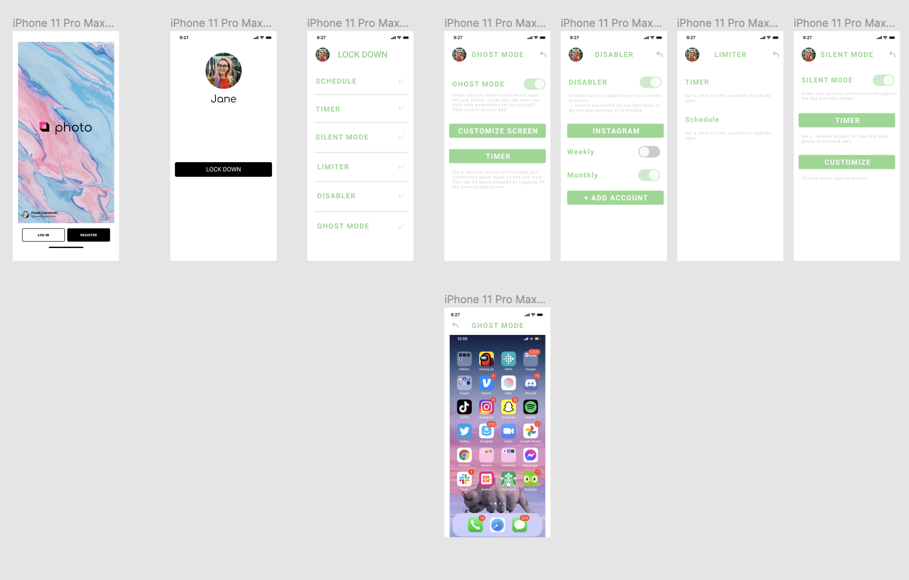
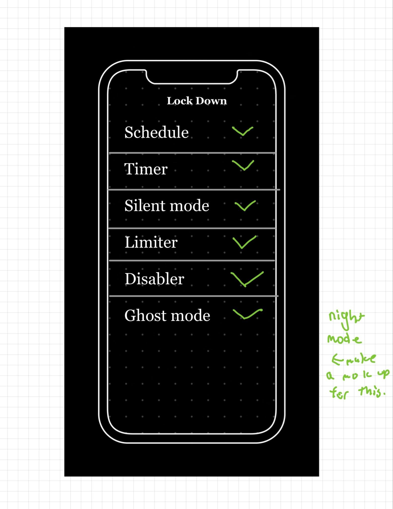
Covering the original six Lock Down features, I sketched on iPad and notebook. I studied Fitbit, Headspace, Figma community sets, and Duolingo to learn the patterns behavioral-change apps lean on: widgets, a clean surface, plain-language descriptions, and statistics for accountability.
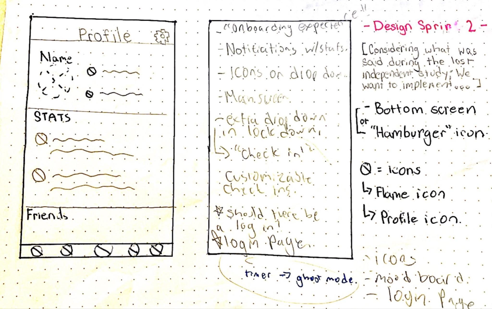
I introduced a shared bottom navigation and brought it to the team so our separate sections could read as one app. This round focused on translating my pages into Rebecca's, and defining the uniform system that landed in the final design.
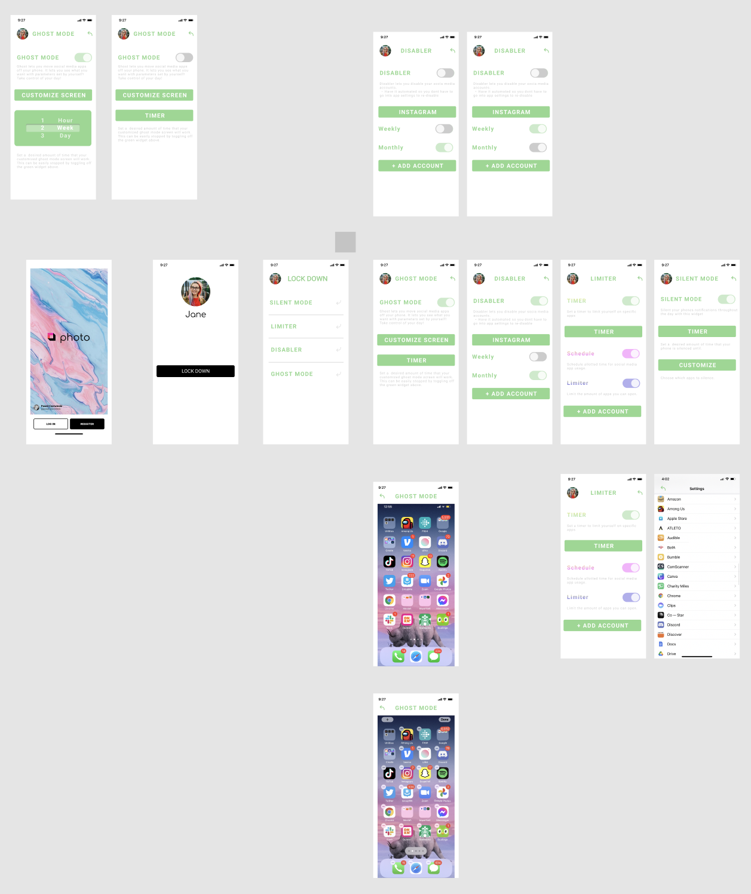
I prototyped the layout and flow in Figma before styling, starting from a basic login template so the structure could be judged on its own. Roommates, classmates, and teachers reviewed it and pushed for changes.
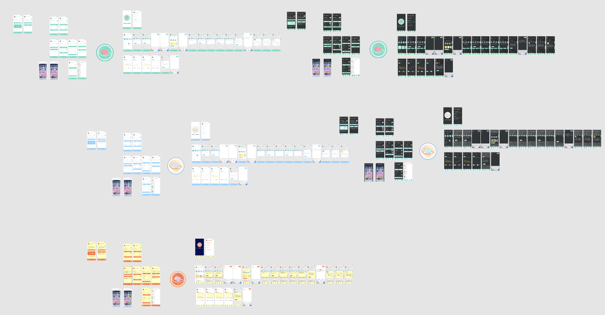
In the last week we merged prototypes with Mahjustice's color design and made final adjustments to Lock Down. Kel moderated over Zoom while we worked through Figma shortcuts, copying and swapping components, and made the group decisions that set the app's final look.
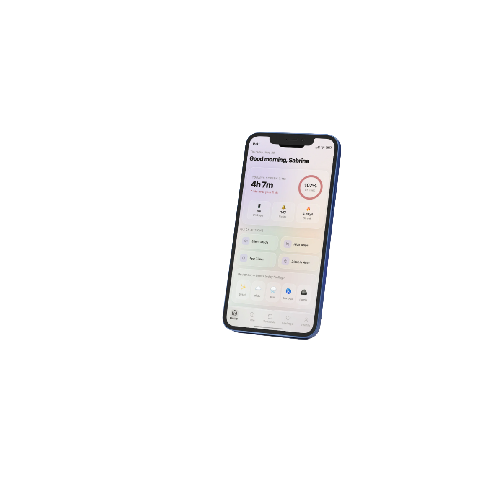
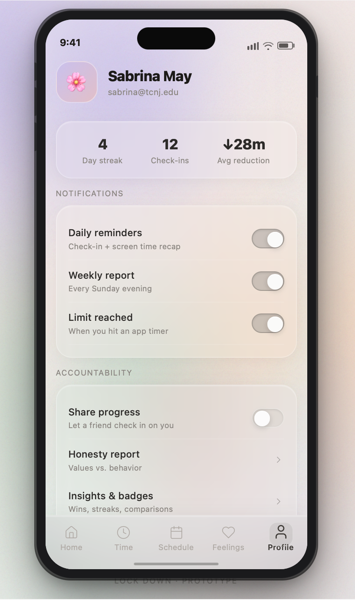
People already know their habits hurt them. The design's job is not to inform, it is to engineer the moment of friction or motivation that actually shifts behavior.
The hypocritical licensing effect is not a footnote, it is the core interaction. Naming the mechanism early gave every screen a reason to exist.
An eight-week independent study forced honest tradeoffs. Documenting what a longer timeline would unlock turned a hard stop into a clear roadmap.
I proposed the study to Professor Kel and founded Lock Down as a TCNJ independent study in Design & Creative Technology. I ran the cross-country research on students' pandemic relationship with their phones, then designed the behavioral-change features and tied them to the mental-health side.
Rebecca and I bonded over the irony of building an app to get you off the apps. We agreed Lock Down would have two halves: mental health and behavioral change. She led the Mental Health UX and organized our weekly meetings.
Mahjustice joined for the visual and graphic side, bringing the app's aesthetic together. He built the color board and icon set that gave Lock Down its uniform, calming surface.
Advised by Dr. Kelter ("Kel"), TCNJ Department of Design & Creative Technology.